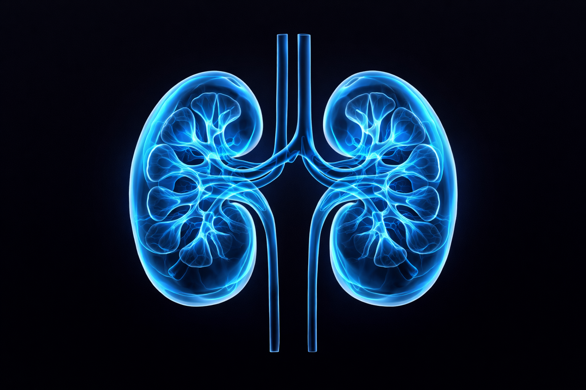

Detect Kidney Disease Early.
Protect Your Life.
Kidney disease is often a "silent killer" because it lacks symptoms in its early stages. Early detection can save lives and prevent permanent damage.

What is Chronic Kidney Disease?
Chronic kidney disease (CKD) means your kidneys are damaged and can't filter blood the way they should. This can lead to waste building up in your body and other health problems.
Causes
The leading causes are diabetes and high blood pressure, account for 3 out of 4 new cases.
Importance
Early detection allows for lifestyle changes and treatments that can slow or stop damage.
Silent Nature
You may not feel sick until the disease is advanced. Regular screening is vital for at-risk individuals.
Common Symptoms
Be aware of these warning signs that your kidneys might not be functioning correctly.
Swelling
Fluid retention leads to swelling in legs, ankles, or feet.
Foamy Urine
Excess bubbles in urine, indicating protein leakage.
Fatigue
Kidneys produce less EPO, leading to fewer red blood cells and tiredness.
High BP
Kidneys help regulate blood pressure; damage can cause it to spike.
Urine Changes
Drastically increased or decreased urination frequency.
Detection Methods
Doctors use these tests to check how well your kidneys are working.
Blood Test
Checks eGFR (estimated Glomerular Filtration Rate) and Creatinine levels.
Urine Test
Checks for albumin (protein) in the urine, one of the earliest signs of damage.
Ultrasound
Visualizing the kidneys to look for abnormalities in size or shape.
Biopsy
Removing a tiny piece of kidney tissue for examination in advanced cases.
AI-Powered Risk Checker
Enter your details for a quick assessment of your kidney health risk factor.
BMI Calculator
Being overweight increases the risk factors for kidney disease.
Prevention Tips
8 Golden rules to protect your kidneys.
Hydration
Drink enough water to help kidneys clear sodium and toxins.
Manage Sugar
Controlling blood sugar prevents diabetic kidney disease.
Control BP
Maintaining a healthy BP is crucial for kidney vessel health.
Smart Diet
Reduce salt intake and processed foods.
Emergency Warning
If you experience **severe swelling**, **chest pain**, **shortness of breath**, or **very low urine output** – seek medical attention immediately. These can be signs of acute kidney failure.